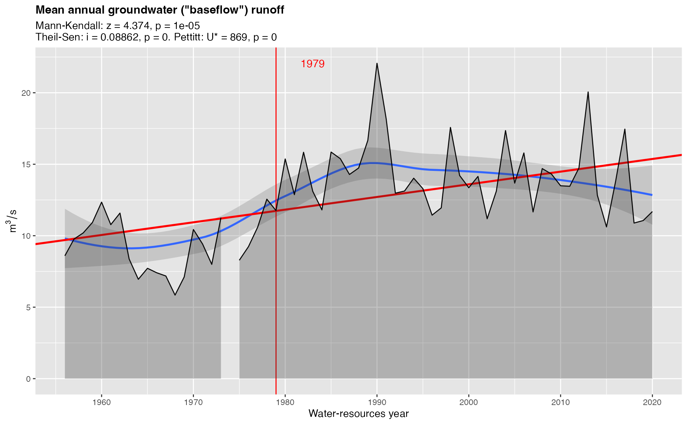

Use this function to get meaningful summary statistics for hydrograph separation. Resulting variables are described by gr_help_vars(). This function is a convenient wrapper around dplyr's df |> group_by |> summarize idiom.
Arguments
- df
data.frameof hydrograph separation resulting fromgr_separate()function- year_min
integerfirst year to summarise- year_max
integerlast year to summarise
Value
data.frame with one row for each water-resources year and multiple columns of statistics explained by gr_help_vars().
Examples
library(grwat)
data(spas) # example Spas-Zagorye data is included with grwat package
# separate
sep = gr_separate(spas, params = gr_get_params(reg = 'center'))
#> grwat: data frame is correct
#> grwat: parameters list and types are OK
# summarize
vars = gr_summarize(sep)
#> Warning: There were 2 warnings in `dplyr::summarise()`.
#> The first warning was:
#> ℹ In argument: `Dspstart = min(.data$Date[which(.data$Qspri > 0)])`.
#> ℹ In group 19: `Year1 = 1974`.
#> Caused by warning in `min.default()`:
#> ! no non-missing arguments to min; returning Inf
#> ℹ Run `dplyr::last_dplyr_warnings()` to see the 1 remaining warning.
#> Warning: There was 1 warning in `dplyr::summarise()`.
#> ℹ In argument: `Q30w = condrollmean(.data$Q, .data$Season == 2, 30)`.
#> ℹ In group 64: `Year = 2020`.
#> Caused by warning in `min()`:
#> ! no non-missing arguments to min; returning Inf
head(vars)
#> # A tibble: 6 × 57
#> Year Year1 Year2 Dspstart Dspend Tsp Qy Qspmax Dspmax Qygr
#> <dbl> <dbl> <dbl> <date> <date> <int> <dbl> <dbl> <date> <dbl>
#> 1 1956 1956 1957 1956-04-08 1956-05-05 27 18.4 467 1956-04-22 8.59
#> 2 1957 1957 1958 1957-03-25 1957-05-04 40 20.2 460 1957-04-08 9.77
#> 3 1958 1958 1959 1958-04-02 1958-05-13 41 27.3 537 1958-04-21 10.2
#> 4 1959 1959 1960 1959-03-28 1959-04-28 31 27.1 406 1959-04-16 10.9
#> 5 1960 1960 1961 1960-03-27 1960-04-27 31 29.6 406 1960-04-15 12.3
#> 6 1961 1961 1962 1961-03-07 1961-05-02 56 18.8 296 1961-04-10 10.8
#> # ℹ 47 more variables: Qsmin <dbl>, Dsmin <date>, Qwmin <dbl>, Dwmin <date>,
#> # Q30s <dbl>, D30s1 <date>, D30s2 <date>, Q30w <dbl>, D30w1 <date>,
#> # D30w2 <date>, Q10s <dbl>, D10s1 <date>, D10s2 <date>, Q10w <dbl>,
#> # D10w1 <date>, D10w2 <date>, Q5s <dbl>, D5s1 <date>, D5s2 <date>, Q5w <dbl>,
#> # D5w1 <date>, D5w2 <date>, Wy <dbl>, Wygr <dbl>, Wsp <dbl>, Wspgr <dbl>,
#> # Wsprngr <dbl>, Wrn <dbl>, Wrngr <dbl>, Wth <dbl>, Wthgr <dbl>, Wgrs <dbl>,
#> # Ws <dbl>, Wgrw <dbl>, Ww <dbl>, Qrnmax <dbl>, Qthmax <dbl>, …
gr_plot_vars(vars, Qygr, tests = TRUE)
#> Warning: Removed 1 row containing non-finite outside the scale range (`stat_smooth()`).
#> Warning: Removed 1 row containing missing values or values outside the scale range
#> (`geom_ribbon()`).
